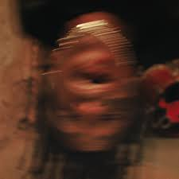
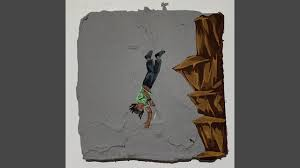
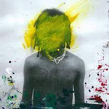

Bakar has released 12 songs throughout his career that he is the main artist on. Along with this he has been featured on 6 songs, and guest appeared on 6 EPs/albums. Bakar's debut mixtape was called BadKid. His most popular song is titled "Hell n Back" and was released in 2019. His most recent release is titled "The Mission".
Bakar Songs
- Big Dreams
- Small Town Girl
- Something I Said
- Million Miles
- All In
- Badlands
- Dracula 
- Chill 
- Hell n Back
- Will You Be My Yellow? 
- 1st Time
- The Mission
This list is a list of songs that Bakar has released and been the main artist on. My personal favorite songs of his are Hell n Back, The Mission, and 1st time. At this time, Bakar has not received any awards for any of his music. However, he has gotten endorsements from artists such as Skepta (British rap artist), Elton John (American musician) and the late Virgil Abloh (designer).